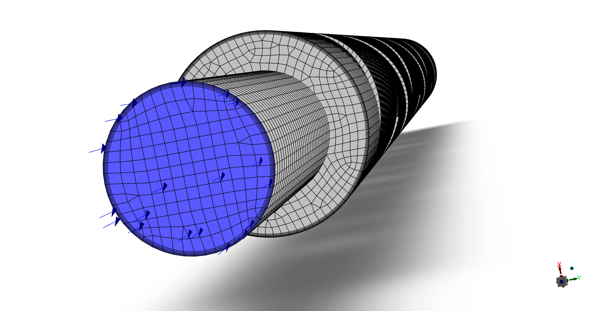
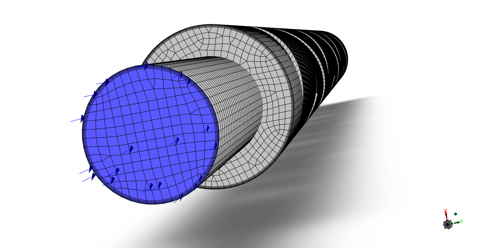
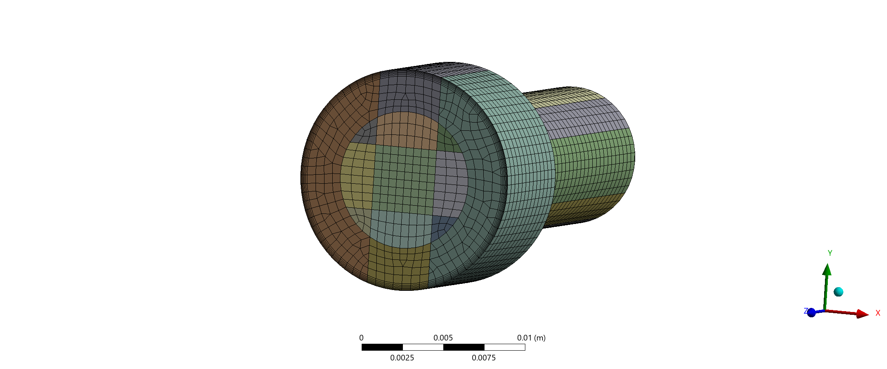
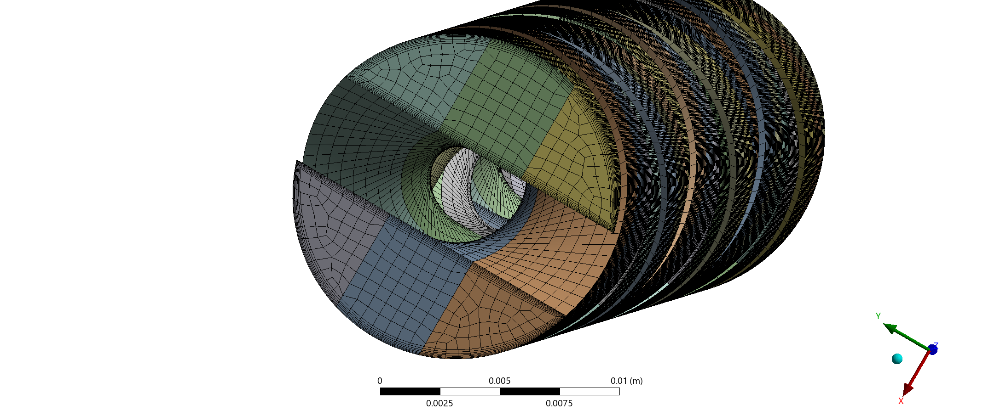
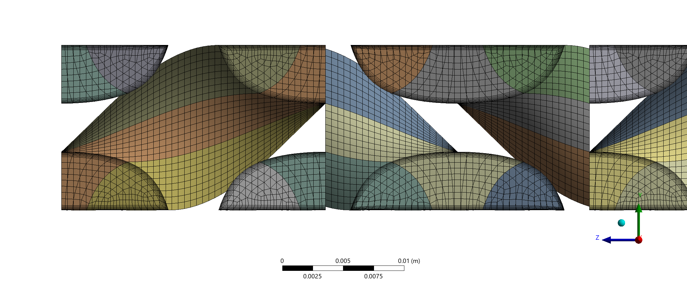

The inlet + short segment without inserts had following quality:
Orthogonal quality:
Min = 0.55
Avg = 0.95
Skewness:
Max = 0.52
Avg = 0.15

Since the geometry was sliced into fragements it resulted in a non-conformal mesh. For better alignment of the corresponding nodes between two meshes at the interface
the geometry was sliced into more elements.

The pipe with helical inserts had following quality:
Orthogonal quality:
Min = 0.32
Avg = 0.73
Skewness:
Max = 0.69
Avg = 0.12

Sweeping the mesh in the direction of the insert required slicing the fluid geometry into even more piecies to achieve good mesh quality.
Each pipe segment with one helical segement was treated as a one part consisting of 6 bodies. At the end an interface had to be defined between
each faces to allow data transfer or "fluid to flow between neighbouring parts" in Fluent.